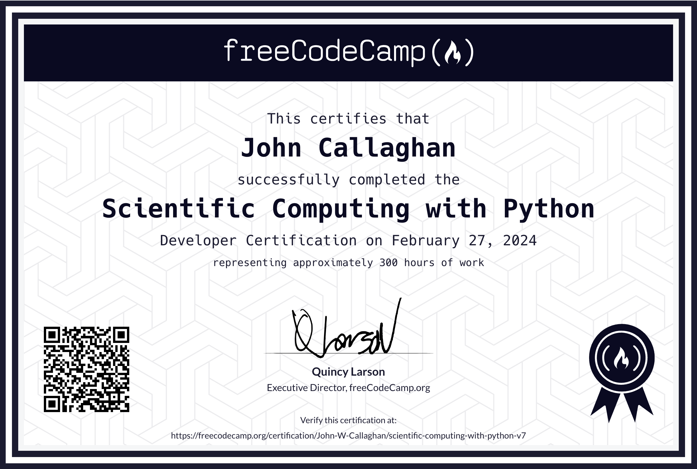
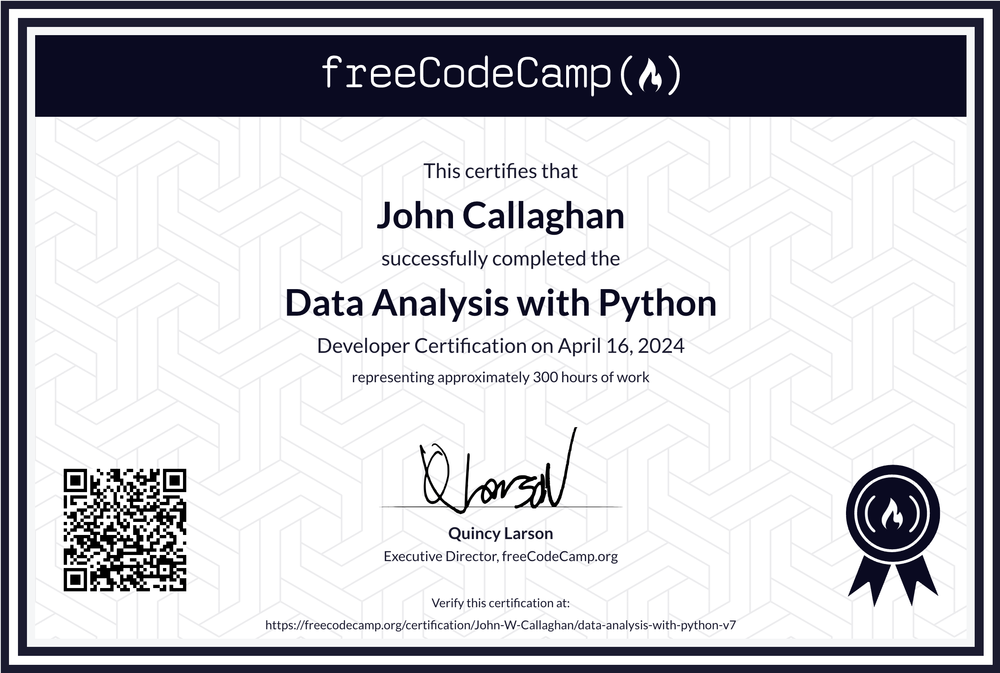
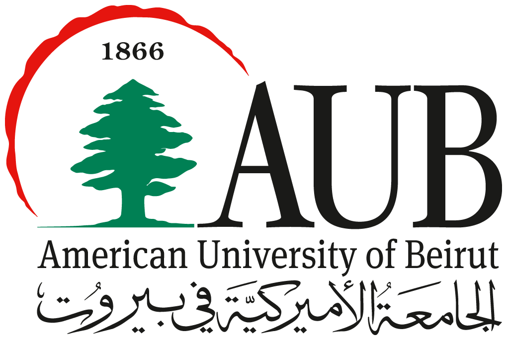
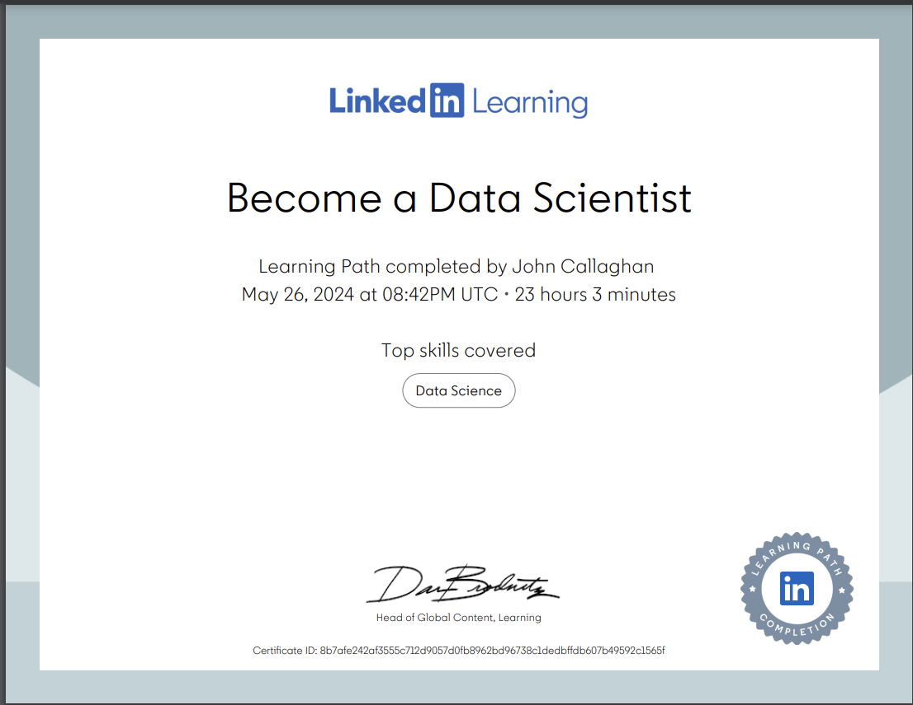

Projects - John Callaghan



Completing the Scientific Computing with Python certificate has been a transformative journey for me, enhancing my understanding of Python through hands-on demos and project creation. The course delved deep into various facets of Python programming, equipping me with a comprehensive skill set to tackle diverse computational challenges. Each module provided a unique learning experience, blending theoretical concepts with practical applications.
From mastering string manipulation through building a cipher to delving into algorithm design with the shortest path algorithm, every project served as a building block in my Python proficiency. The curriculum fostered a holistic understanding of Python's capabilities, covering essential topics such as lambda functions, regular expressions, recursion, data structures, and object-oriented programming. For instance, constructing a Sudoku solver honed my skills in classes and objects, while implementing the Luhn algorithm sharpened my ability to work with numbers and strings effectively.
Throughout the course, I embraced a hands-on approach, actively engaging in project-based learning to reinforce theoretical knowledge. By creating an expense tracker using lambda functions and a password generator employing regular expressions, I not only grasped fundamental concepts but also gained practical insights into real-world applications of Python programming. Overall, the Scientific Computing with Python certificate has empowered me to leverage Python as a powerful tool for data analysis, manipulation, and problem-solving, opening up new avenues for exploration and innovation in the realm of computational science.

From finishing the Free Code Camp course "Data Analysis with Python" has helped me deepen my understanding and usage of Python libraries that have become indispensable in my knowledge of the data science field. Through mastering NumPy, Pandas, Seaborn, and Matplotlib, I've gained profound insights into the core tenets of data science.
Armed with these tools, I navigate my university modules with newfound confidence, seamlessly weaving data science techniques to unravel complex patterns and extract invaluable insights.
After purchasing linkedin Premium I decided to challenge myself by trying to complete one of theyre Academic Credit courses from the American University of Beirut for the topic of data science


Completing this I developed a robust set of skills crucial for data science. Throughout the course, I gained proficiency in data manipulation and analysis using Python and R, and learned to apply statistical methods to extract insights from complex datasets. I mastered machine learning techniques, including supervised and unsupervised learning, and honed my ability to visualize data effectively using tools like Matplotlib and Tableau. Additionally, the course emphasized the importance of data cleaning and preprocessing, ensuring the accuracy and quality of data-driven decisions. Collaborative projects and hands-on assignments further enhanced my problem-solving skills and ability to work with real-world data, preparing me to tackle diverse challenges in the field of data science.